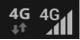

怎样享受一个不上火的世界杯！
2014-07-17
好消息！凉茶领导者加多宝联合广州移动一起助力#世界杯V时刻#！现在广州移动4G用户只要在8月31日前充入100元话费，并发送登记短信到10086，可在次月底收到清凉积分短信凭证，到全市374家便利店兑换一整箱加多宝中国好声音促销罐！
【已经是4G客户怎样拿最新的加多宝中国好声音促销装】
如果你已经用上高端大气上档次的4G的话（手机上有显示的标识），充入100元话费，编辑短信“4GSQL1”发送至10086，即可获得加多宝一箱。
【充值方法】：只要点击广州移动官方微信账号下方“掌上移动”—“话费充值”，选择100元充值就搞定啦!
看巴西正宗足球，听中国好声音，喝加多宝正宗凉茶！